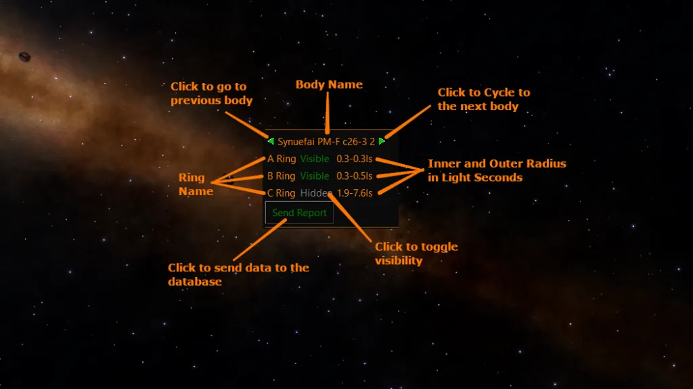

CMDR Chewcat1 and LCU No Fool Like One
Why are some large rings invisible, and Is there a definitive way to calculate whether the rings will be visible or not with just data from the Full Spectrum System Scanner(FSS)? Commander Chewcat1 set out to answer that question. The answer to this question could help us to determine up front whether a shepherd moon will appear between visible rings or if very large rings will be visible at all.
Measurable properties of the ring, such as width and density can be an indicator of whether the ring will be visible of the ring.
The FSS journal entries are able to record the following information about the rings.
Using this data it is possible to make further calculations for density and ring width. It should be noted that the thickness of the rings is not available, consequently variation in ring thickness cannot be measured and therefore the actual density in Mt/km3 cannot be calculated. Density calculations effectively assume a uniform thickness of 1km.
Density Mt/km2 = Mass / ( (π * OuterRadius2 ) – (π * InnerRadius2 ) )
Width = OuterRadius – Inner Radius
Commander Chewcat1 gathered data on a number of expeditions and compiled the results in this sheet Large Ring Visibility
Plotting the data on a scatter chart shows that there were some clear boundaries in the data, showing that visibility was dependent on both density and ring width. However this only covered around 50 bodies and only those with large rings.
As can be seen from the scatter chart it appears that visibility can be assumed at 0.1 MT/km2
But we cannot predict invisibility by density alone. It looks like smaller rings can be visible at lower densities. With a great deal of data available it should be possible to create a survey to map out the boundaries of visibility further.
It was also noted that very narrow rings only a few kilometres across could also be invisible so more data was needed for a fuller picture.
Canonn R&D supplied a new ring survey plugin module for pilots to install on their ship. Using the observed values for width and density the plugin provided an interface where the pilots could confirm if the rings were visible or not. This data was sent to a spreadsheet for analysis. To date over 4000 observations have been recorded.

Canonn pilots were further more, directed to scan rings specifically in the range of width and density where the transition from visible to invisible was expected to occur based on the initial data set, so that more accurate data could be gathered to find the transition points. The data was also plotted on a scatter chart on a log scale.
As can be seen, the initial conclusions have more or less held, however the boundaries do have some overlap and there appear to be several outliers that do not fit at all. It remains to be seen if the outliers are due to errors in recording the data. There are instances, particularly with very narrow width rings, where they can be invisible if not viewed from the correct angle and the right lighting conditions. It is also possible that commanders assessing ring visibility from the FSS screen are not counting the rings correctly. This is particularly an issue with very large C rings which may not be visible in the FSS due to being too far from the body to display within the field of view (as reported by Cmdr Eahlstan).
Another reason for the overlapping boundaries may be because the FSS records data in scientific notation, which effectively truncates the values. The bigger the magniture of the inner and outer radius, the higher the margin of error.
There are many different types of rings, but for this experiment they can be broken down into two basic categories, solid rings and spaced rings. Solid rings have their mass more evenly distributed throughout but will still have some banding and be one continuous ring(fig 1). Spaced rings on the other hand will have their mass spread out into separated rings, but will still be classified as a single ring, letting their mass be lower while still being visible(fig 2). It is possible that this variation in density within the body of the ring itself also has a bearing on the visibility.

Figure 1: Solid rocky ring with banding near the center.

Figure 2: Spaced rocky ring with large gaps.
Due to the many variations rings can come in, it is unlikely that there is a 100% accurate way to determine what a ring will look like without a direct visual inspection. But using the data collected so far we can see that anything with a width greater than 1.6 million km and a density less than 0.06 Mt/Km2 will be invisible. Also rings that are less than 6km in width are likely to be invisible,
Further analysis is needed and the outliers need to be revisited to confirm whether the data is accurate. Further analysis and observations could be undertaken to identify whether there are any mesurable criteria that can determind whether rings will be spare or uniform in density.
We would like to encourage the entire scientific community to inspect the data gathered and formulate their own conclusions.

View of large spaced rocky ring of Chraufai ND-J d9-2 body A4